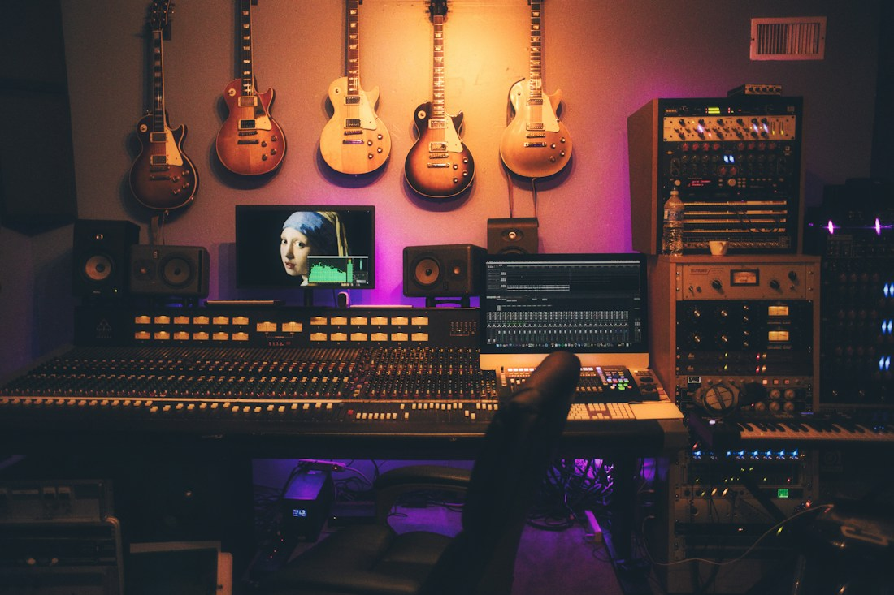

01 / DALE VOZ Audio
Audio Studio Editor
Una voz, una base musical y todo lo que quieres contar. Graba, edita y mezcla en varias pistas desde tu navegador.
Edición multipistaGrabaciónEfectos4 formatos de salida
Dale voz. Dale imagen. Dale movimiento.
Tres editores y un estudio de herramientas para transformar tus ideas en contenido que se escucha, se ve y se comparte.
Escoge por dónde empezar. Los editores y las herramientas de sonido están a un clic de tu próxima creación. Online y gratis.
Una voz, una base musical y todo lo que quieres contar. Graba, edita y mezcla en varias pistas desde tu navegador.
La imagen que tenías en la cabeza, por fin en pantalla. Combina capas, retoca la luz y crea piezas con personalidad.
De tus clips a una historia con ritmo. Combina vídeo, imágenes, títulos y sonido en una línea de tiempo y prepara tu próximo contenido.
Doce herramientas de sonido y un espacio para organizar, preparar por lotes y compartir. Ahora, dentro de Dröma.
Separa la voz del acompañamiento con IA, escucha las dos pistas y descárgalas en WAV. Tu canción se procesa en tu equipo, dentro de Dröma.
Reduce el ruido continuo de una grabación de voz, compara con el original y decide cuánto ambiente quieres conservar.
Convierte uno o varios audios a MP3 en un solo lote, con calidad configurable y salida mono o estéreo. Escucha cada resultado y descarga los MP3 por separado o juntos en un ZIP.
Combina una locución y una base musical. La música baja al detectar voz y recupera su nivel durante las pausas, con controles para encontrar el equilibrio.
Abre un vídeo del ordenador, extrae su pista de sonido y prepara un WAV o MP3 para editarlo, publicarlo o llevarlo al creador de audiogramas. Todo en tu navegador.
Transforma un fragmento sonoro en un vídeo con fotografía, logo, onda animada y subtítulos editables. Audio e imagen se encuentran en Dröma, online y gratis.
Una entrada, una voz, una atmósfera. Combina tus pistas y encuentra ese momento en el que todo encaja.
Así empieza una historia.
Enciende el sonido. Pulsa play.Ejemplo sonoro ilustrativo creado para esta web. Tus proyectos se editan en Audio Studio.

DALE VOZ A LO QUE IMPORTA.Graba una entrevista, limpia los cortes y encuentra el equilibrio entre voz y música. Diseña después la portada que acompañará a tu próximo episodio.
Crea tu primer pódcastUn recorrido práctico para grabar, editar y exportar tu primer episodio.
Leer la guíaOrganiza imagen, tipografía y color para dar identidad a tu contenido.
Leer la guíaMonta planos, añade títulos y sonido y prepara tu primera pieza en Video Editor.
Leer la guíaDröma reúne herramientas para que más personas puedan dar forma a sus ideas. Desde el primer episodio y su portada hasta ese vídeo que encuentra su propio ritmo. Abre el navegador. Haz una prueba. Empieza.
Conoce el proyectoAbre tu editor. Encuentra tu ritmo. Crea algo tuyo.